École d’Hiver 2027
Faire connaître un séminaire de trois jours pour les doctorants d’Alsace. Un vrai client, le Pôle universitaire d’innovation Alsace, et 54 places à remplir. J’étais chef de projet, et j’ai conçu la page web et les 11 publications LinkedIn.
- Mon rôle
- Chef de projet, UX/UI designer
- Équipe
- 4 étudiants, 3 parcours
- Date
- Octobre-novembre 2026, SAÉ 302
- Outils
- Figma, Miro

Le problème
L’École d’Hiver de la créativité et de l’innovation réunit des doctorants de l’Université de Strasbourg et de l’Université de Haute-Alsace. Pendant trois jours, ils travaillent en équipe sur des défis réels. Elle est gratuite, tout est pris en charge, et elle valide 27 heures de formation.
L’offre est solide, mais elle se voit peu. Notre audit de la première édition l’a montré : le site était difficile à trouver sur Google, les informations étaient réparties sur plusieurs supports, et rien ne s’adressait aux encadrants ni aux doctorants étrangers.
- 1
- seule publication LinkedIn trouvée avant l’édition 2026
- 12
- vues pour la vidéo de 2026, longue de 3 min 25
- 54
- places à remplir pour l’édition 2027
Mon rôle
Nous étions quatre, issus de trois parcours : design d’expérience, création numérique et développement web. Voici ce que j’ai fait, et ce que j’ai laissé à ceux dont c’est le métier.
- Ce que j’ai réaliséLa gestion de projet et les échanges avec le client. Le dossier de stratégie. Les wireframes, les maquettes et les textes de la page. Les 11 publications LinkedIn et leurs mises en situation.
- Ce que j’ai fait à plusieursLa matrice RACI et le planning, avec Baptiste. Le tournage d’une des deux vidéos, avec Baptiste. Le rapport et l’oral de référencement, avec Baptiste et Gauthier.
- Ce que je n’ai pas faitL’analyse de référencement (Baptiste). Le trophée, les décors et les stickers (Alexis et Gauthier). Le montage et le motion design des vidéos (Baptiste et Alexis).
La stratégie
Notre plan répond à trois questions simples. Comment être vu ? Comment être compris ? Comment convaincre ? Il contient neuf actions, et il commence avant l’événement, alors qu’en 2026 la communication arrivait surtout après.
Pour que tous les supports parlent de la même façon, j’ai défini une charte éditoriale : un message, un ton, et un bloc d’informations pratiques identique partout.
« Une parenthèse dans la thèse » : trois jours gratuits, qui valident un quart des heures de formation obligatoires.
- Un tonLe vouvoiement, qui convient aux doctorants comme aux encadrants. Le côté jeune passe par les visuels et par des phrases courtes.
- Les mêmes informations partoutLes dates, le lieu, la gratuité, les 27 heures, les 54 places et le lien d’inscription. En français, et en anglais pour les doctorants étrangers.
- Deux nouveaux publicsLes encadrants, qui acceptent ou non qu’un doctorant parte trois jours. Et les doctorants étrangers.
La page web
En 2026, l’École d’Hiver avait un site à part, créé sur Canva. J’ai proposé de le remplacer par une page sur le site du client, dans l’espace des doctorants. La page reprend donc l’en-tête et le pied de page existants, avec leurs effets de survol.
Dès son arrivée, le doctorant trouve l’essentiel : le titre, les dates, le lieu et un bouton « S’inscrire ». Viennent ensuite les informations pratiques, le calendrier, les vidéos, les avis d’anciens participants et un encart pour les encadrants. Les vidéos ne se chargent qu’au clic, pour garder une page légère.
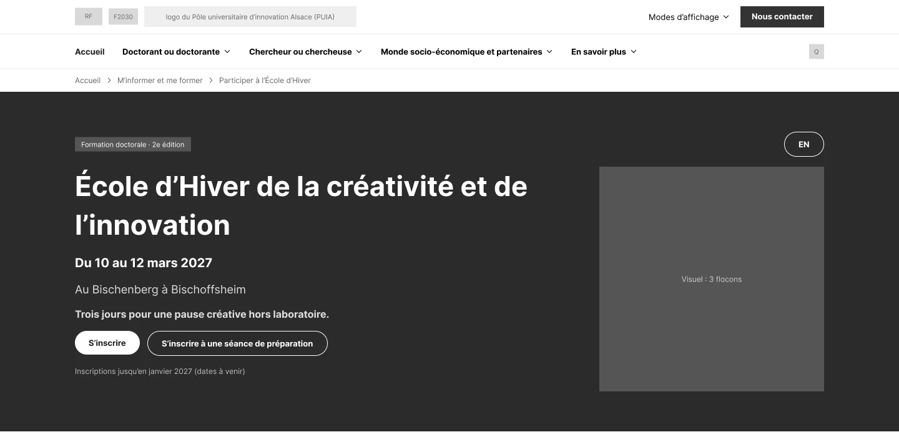
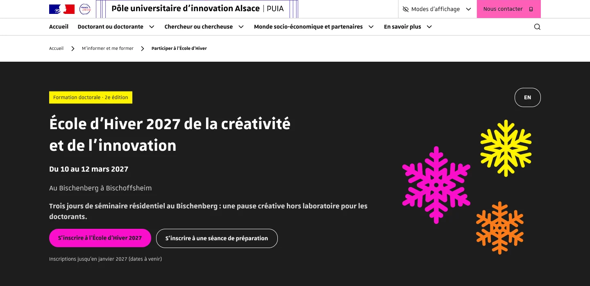
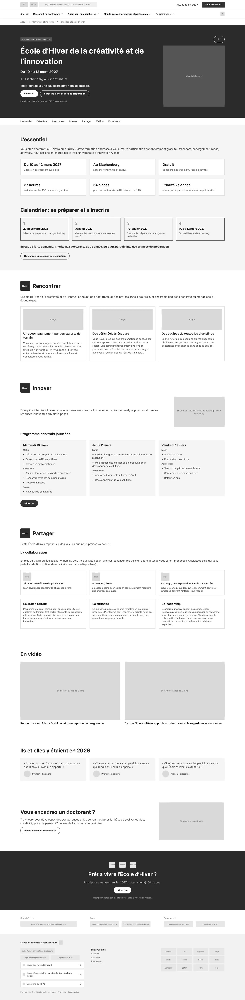
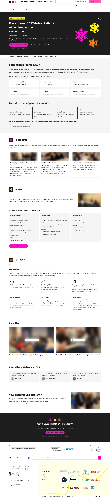
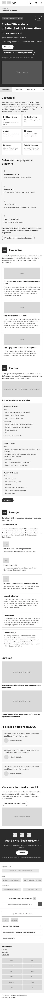
Pour voir la page entière : choisissez une étape, puis faites défiler à l’intérieur. Les maquettes sont la version finale, celle qui intègre le référencement. Les photos des maquettes appartiennent au client : je les ai floutées, car je n’ai pas le droit de les diffuser.
Le référencement
Baptiste a mené l’analyse de référencement. Elle a montré que Google ne pouvait pas lire le texte de l’ancien site Canva, donc aucun de ses mots-clés. Nous avons choisi cinq mots-clés, dont « École d’Hiver 2027 ».
Mon travail a été de les faire entrer dans la page sans abîmer la lecture. J’ai donc réalisé une seconde version des maquettes : titres et textes réécrits, balises de titre et de description, et textes alternatifs pour les images. C’est cette version que nous avons gardée, et c’est elle que vous voyez plus haut.
Les textes visibles, de la première version à la version finale
Le mot-clé principal est surligné. Il apparaît maintenant dans les titres et sur les boutons, là où Google lui donne le plus de poids.
-
Titre principal
AvantÉcole d’Hiver de la créativité et de l’innovation
AprèsÉcole d’Hiver 2027 de la créativité et de l’innovation
-
Accroche
AvantTrois jours pour une pause créative hors laboratoire.
AprèsTrois jours de séminaire résidentiel au Bischenberg : une pause créative hors laboratoire pour les doctorants.
-
Titre de section
AvantL’essentiel
AprèsL’essentiel de l’édition 2027
-
Appel final
AvantPrêt à vivre l’École d’Hiver ?
AprèsPrêt à vivre l’École d’Hiver 2027 ?
-
Boutons d’inscription
AvantS’inscrire
AprèsS’inscrire à l’École d’Hiver 2027
Les balises lues par Google
Elles ne s’affichent pas sur la page. Elles servent au résultat de recherche et aux lecteurs d’écran.
-
Titre de la page, 52 caractères
École d’Hiver 2027 : Formation Innovation & Doctorat
-
Description, 123 caractères
Participez à l’École d’Hiver 2027 du PUI-A au Bischenberg. 3 jours d’immersion en créativité et innovation pour doctorants.
-
Texte alternatif du visuel d’en-tête
Flocons de neige illustrant l’École d’Hiver 2027 du PUI-A

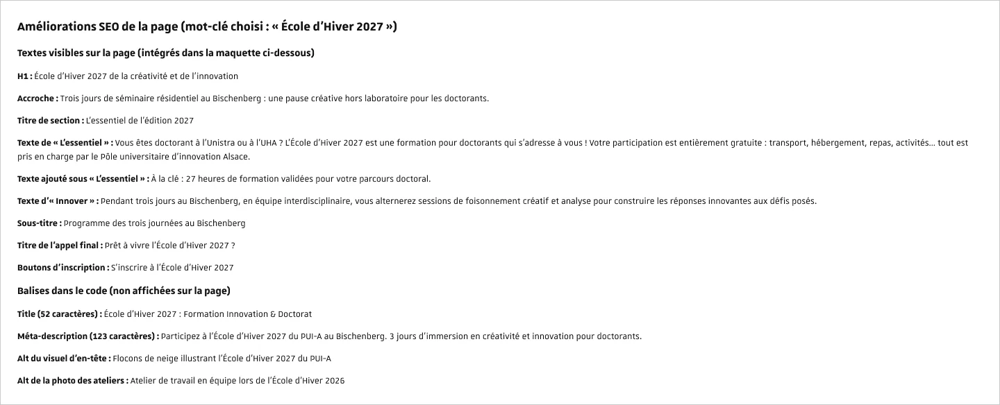
Les 11 publications
J’ai réalisé les visuels, les textes et les mises en situation de onze publications LinkedIn, prévues du 17 novembre 2026 au 16 mars 2027. Chacune correspond à un moment clé : une séance de préparation, l’ouverture des inscriptions, le rappel huit jours avant, puis les lauréats.
Toutes suivent le même gabarit, pour que l’on reconnaisse l’événement d’un coup d’œil : un fond sombre, les trois flocons, une étiquette jaune pour le sujet et un titre court, lisible sur téléphone. Quand une information manquait, je l’ai laissée entre crochets au lieu de l’inventer.
Un seul gabarit, onze moments
Faites défiler pour suivre la campagne
-
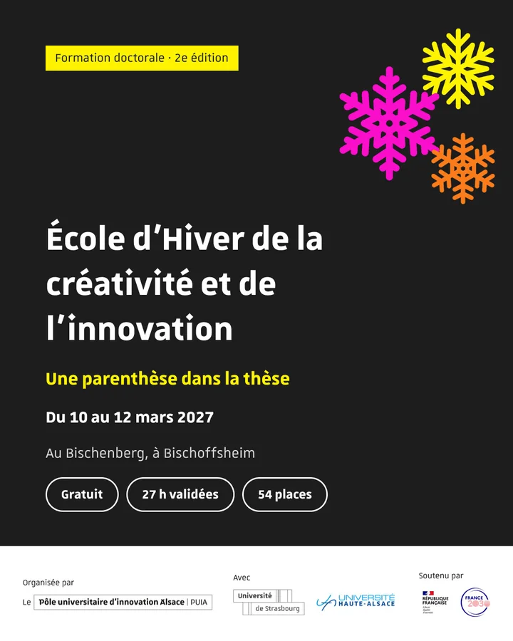
0117 nov.AnnonceFaire connaître la 2e édition et son message : « Une parenthèse dans la thèse ». -
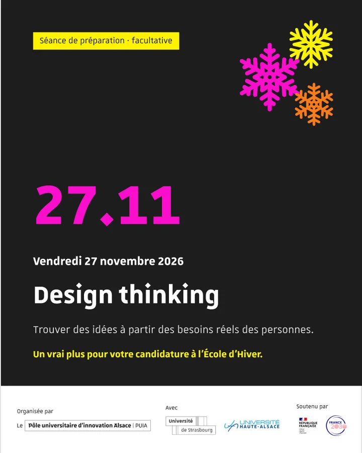
0224 nov.Séance du 27 novembreRappeler la première séance de préparation, sur le design thinking. -
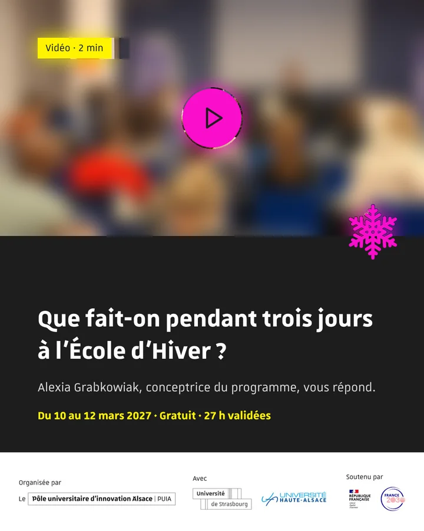
038 déc.Vidéo des doctorantsMontrer en 2 minutes ce que l’on fait pendant les trois jours. -
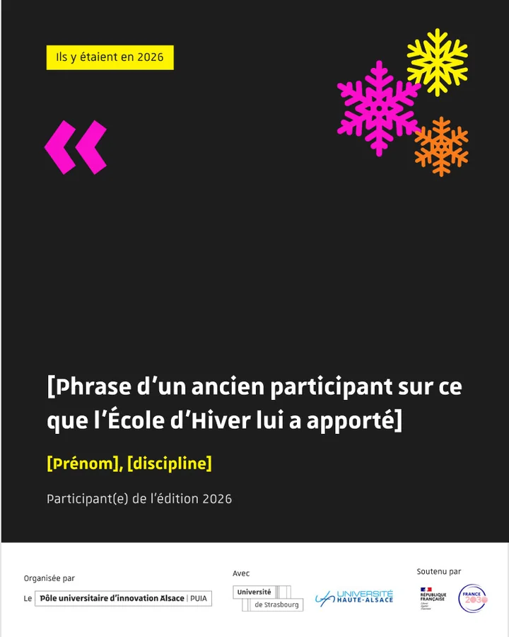
0415 déc.TémoignageDonner la parole à un ancien participant. La citation reste entre crochets : elle sera fournie par le client. -
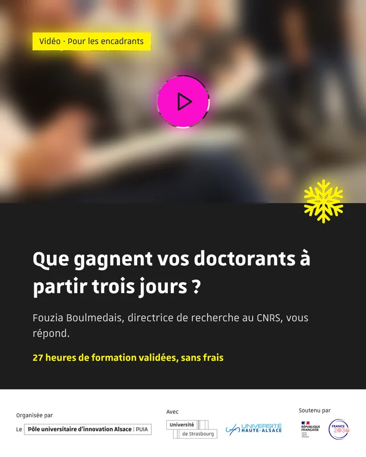
055 janv.Vidéo des encadrantsParler pour la première fois à ceux qui acceptent qu’un doctorant parte trois jours. -
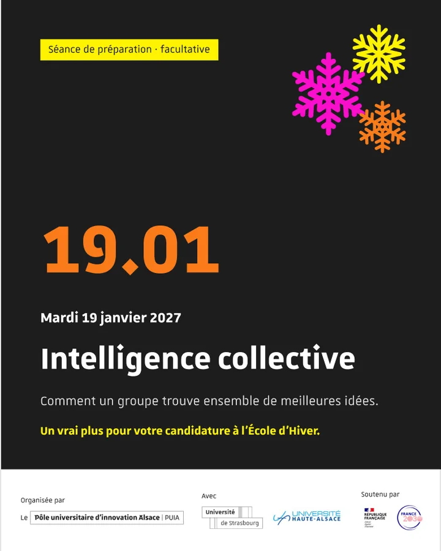
0612 janv.Séance du 19 janvierRappeler la seconde séance de préparation, sur l’intelligence collective. -
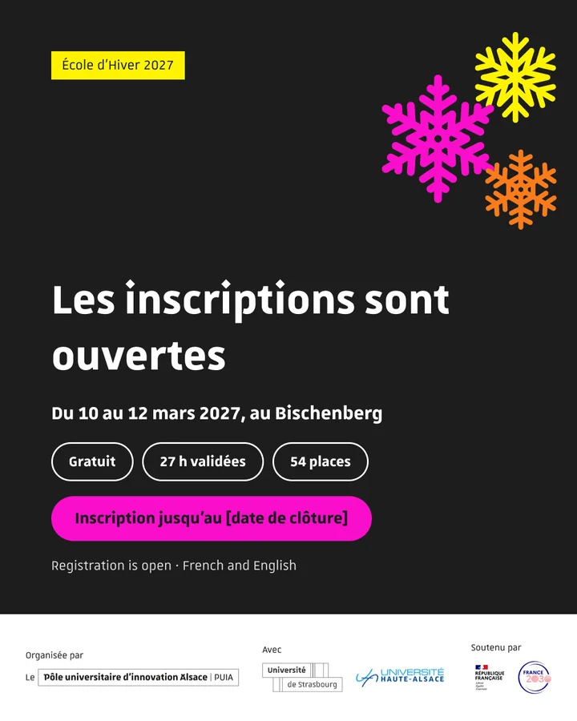
07[date d’ouverture]Inscriptions ouvertesAnnoncer l’ouverture, en français et en anglais pour les doctorants étrangers. -
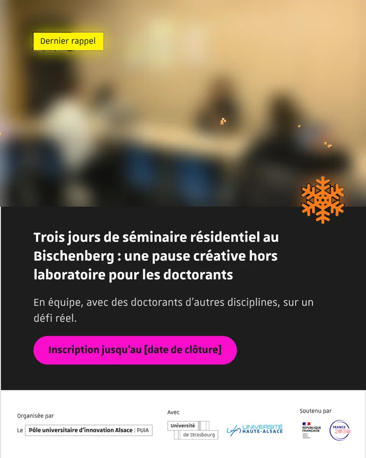
08[date]Dernier rappelRelancer avant la clôture des inscriptions. -
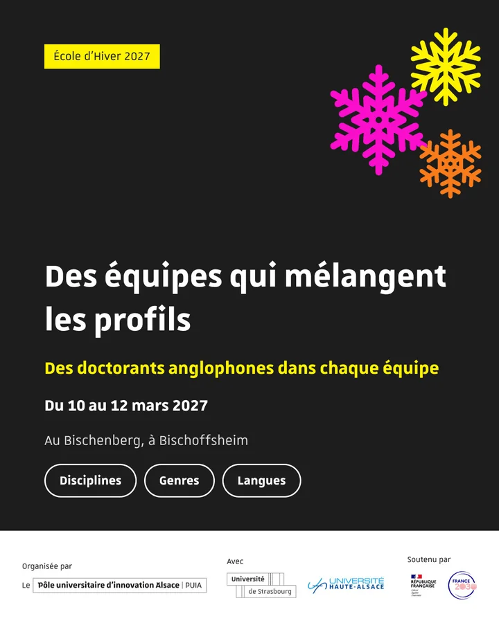
092 févr.Équipes mixtesPublication ajoutée après les réponses du client, le 10 novembre. -
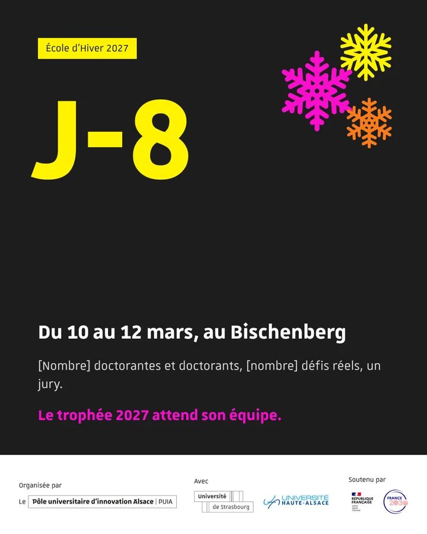
102 marsJ-8Faire monter l’attente, huit jours avant l’événement. -
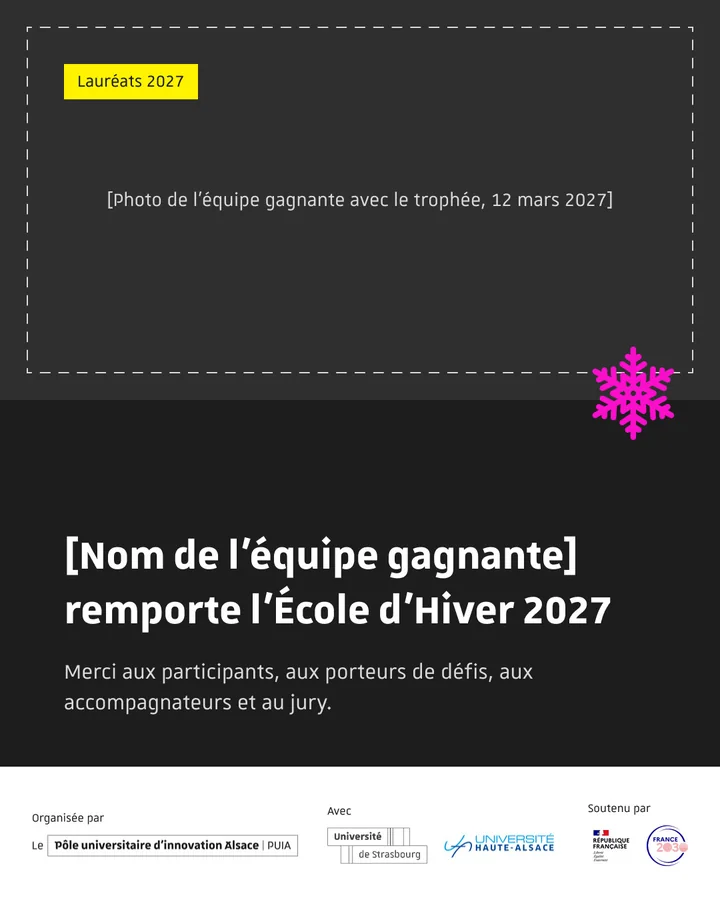
1116 marsLauréatsRemercier les participants et montrer l’équipe gagnante.
Les vidéos
L’équipe a produit deux vidéos courtes, de 1 min 45 à 2 minutes : presque deux fois moins que la vidéo de 2026. La première s’adresse aux doctorants. La seconde s’adresse aux encadrants : c’est la première vidéo de l’École d’Hiver qui leur parle.
De mon côté, j’ai préparé les questions des interviews et les autorisations de droit à l’image. J’ai aussi tourné la première vidéo avec Baptiste, le 10 novembre. Le montage et le motion design sont le travail de Baptiste et d’Alexis.
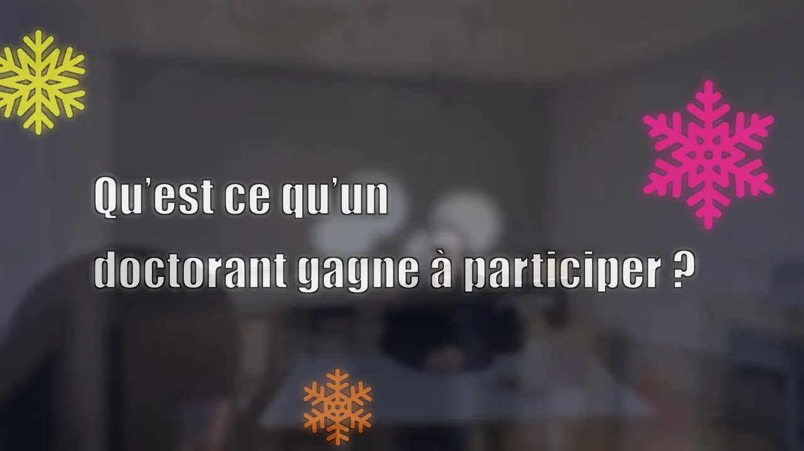
Piloter le projet
Le projet s’est joué sur deux semaines, en octobre puis en novembre. Au lancement, Baptiste et moi avons réparti les rôles avec une matrice RACI : pour chaque tâche, qui la réalise, qui la valide, qui donne son avis et qui est tenu au courant. Le client y figure aussi. Un diagramme de Gantt montrait ce qui était prévu, et un tableau Miro montrait où en était chaque tâche.
- 11
- publications, au lieu des 8 visées au départ
- 9
- actions dans le plan de communication
- 2
- maquettes, chacune en deux versions
Un imprévu, absorbé sans retard
Le 10 novembre, à trois jours de la soutenance, le client a répondu à nos questions. Certaines réponses changeaient des contenus déjà terminés. Comme la maquette était finie en avance, j’ai pu corriger la page et les publications, et en ajouter une onzième sur la composition des équipes. J’ai aussi repris les visuels LinkedIn prévus pour Alexis, pour qu’il se concentre sur les vidéos.
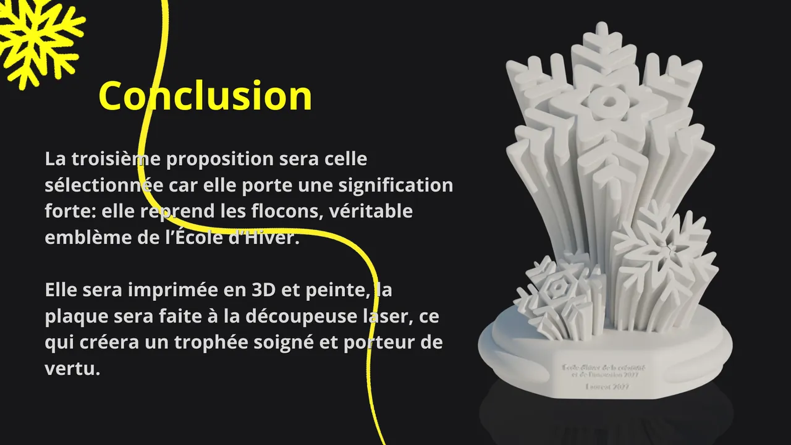
Ce que j’en retiens
Tous les livrables ont été rendus à temps et présentés au client le 13 novembre. La campagne commence le 17 novembre : ses résultats se mesureront en mars 2027, avec le nombre de candidatures et de places occupées. Je ne peux donc pas encore dire si elle a fonctionné.
Ce projet m’a appris à concevoir pour un vrai client, avec sa charte, son site et ses contraintes. Et à dire clairement ce que je ne sais pas, plutôt que de l’inventer.
Ce que je ferais autrement
- Poser toutes mes questions au client dès le début, pour ne pas modifier des contenus déjà terminés.
- Faire un planning qui couvre toute la période, avec du temps pour les retours du client. Le nôtre ne couvrait que les deux semaines de projet.
- Utiliser un seul canal de discussion dans l’équipe, au lieu de deux.
Projet suivant